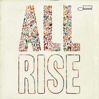
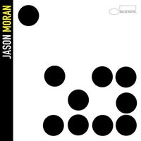
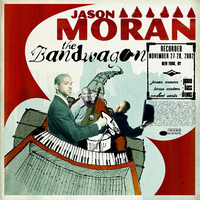
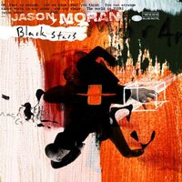

Discography
-

- Put Your Hands on It
- Ain't Misbehavin
- Yacht Club Swing
- Lulu's Back In Town
- Two Sleepy People
- The Joint Is Jumpin
- Honeysuckle Rose
- Ain't Nobody's Business
- Fats Elegy
- Handful of Keys
- Jitterbug Waltz
- Sheik of Araby/I Found a New Baby
-

- Blue Blocks
- RFK in the Land of Apartheid
- Feedback Pt. 2
- Crespuscule with Nellie
- Study No. 6
- Gangsterism Over 10 Years
- Big Stuff
- Play to Live
- The Subtle One
- To Bob Vatel of Paris
- Old Babies
-
- Break Down
- Milestone
- Refraction 2
- Cradle Song
- Artists Ought to Be Writing
- Refraction 1
- Arizona Landscape
- Rain
- Lift Ev'ry Voice and Sing
- To Bob Vatel of Paris
- He Puts on His Coat and Leaves
-

- Gangsterism On the Rise
- Jump Up
- Aubade
- G Suit Saltation
- I'll Play the Blues for You
- Fire Waltz
- Field of the Dead
- Restin
- Lift Ev'ry Voice and Sing
- The Field
- Gangsterism On the Set
-

- Intro
- Another One
- Intermezzo, Op. 118, No. 2
- Ringing My Phone
- Out Front
- Gentle Shifts South (My Folks' Folks)
- Gangsterism on Stages
- Body & Soul
- Infospace
- Planet Rock
-
- You've Got to Be Modernistic
- Body & Soul
- Planet Rock
- Planet Rock Postscript
- Time into Space into Time
- Gangsterism on Irons
- Moran Tonk Circa 1936
- Passion
- Gangsterism on a Lunchtable
- Auf Einer Burg/In a Fortress
- Gentle Shifts South
-

- Foot Under Foot
- Kinda Dukish
- Gangsterism on a River
- Earth Song
- Summit
- Say Peace
- Draw the Light Out
- Out Front
- The Sun at Midnight
- Skitter In
- Sound It Out
-
- Later
- Thief Without Looth
- Jóga
- Wig Wise
- Yojimbo
- Another One
- Lies Are Sold
- Murder of Don Fanucci
- Twelve
- Three of the Same from Two Different
- Fragment of a Necklace
- Battle of the Cattle Acts
- Gangsterism on Wood
-

- Gangsterism on Canvas
- Snake Stance
- Le Tombeau de Couperin / States of Art
- Still Moving
- JAMO Meets SAMO
- Kinesics
- Aquanaut
- Retrograde
- Release from Suffering
- Root Progression
-
- Theme From Blow Up
- The Sidewinder
- Ping Pong
- Beatrice
- No Room For Squares
- Song For My Father
- Tom Thumb
- Commentary On Electrical Switches
- Big Bertha
- Recorda Me
- Song Of The Whispering Banshee
- False Start
- 20 Questions